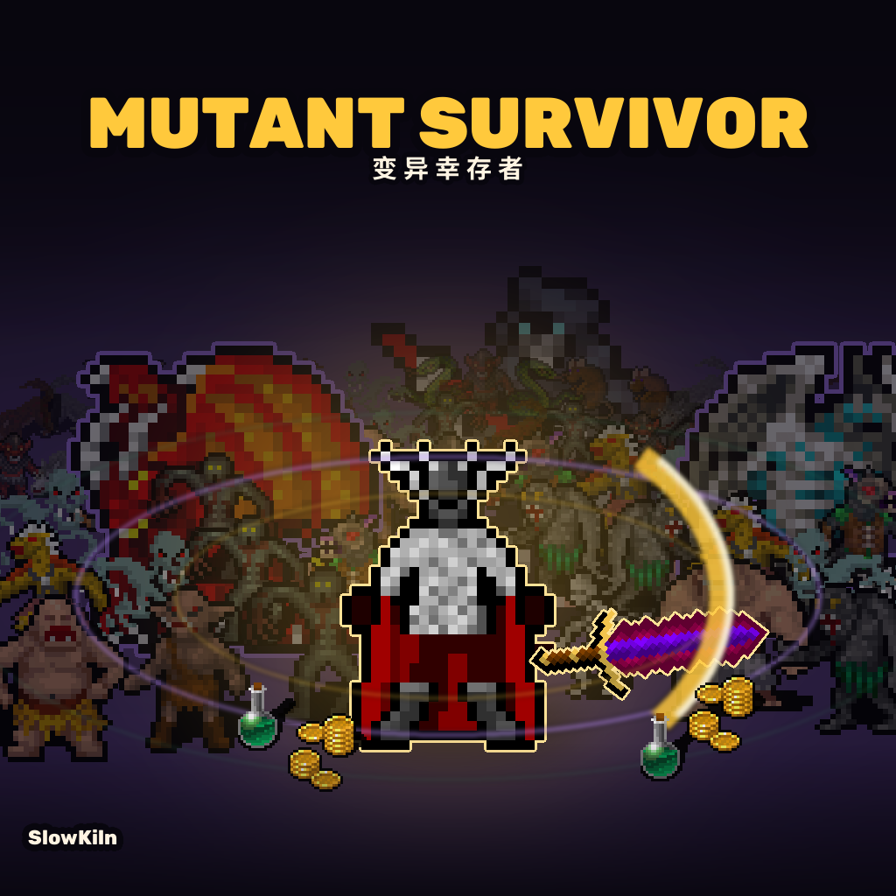
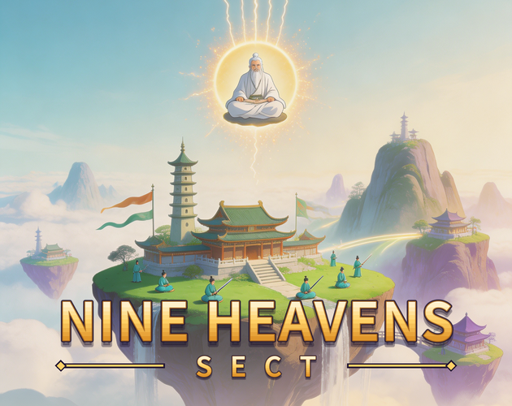

变异幸存者Mutant Survivor
站在怪堆里自动开火，活过一波又一波。每波结束挑一件强化， 慢慢把自己滚成一台绞肉机 —— 玩法接近《土豆兄弟》。 目前是原型阶段，重点打磨手感和数值。
开始游戏用 Godot 做的网页游戏 · 点开就能玩，不用下载安装

站在怪堆里自动开火，活过一波又一波。每波结束挑一件强化， 慢慢把自己滚成一台绞肉机 —— 玩法接近《土豆兄弟》。 目前是原型阶段，重点打磨手感和数值。
开始游戏
在浮空诸峰上经营一个修仙宗门：派弟子上山修炼、突破境界、请长老自动管理。 阴阳两派越平衡产出越高，攒够气运就渡劫重开，一轮比一轮快。 关掉网页也在替你挂机。
开始游戏更多作品陆续加入